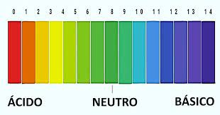

O pH é uma medida fundamental que desempenha um papel crucial em diversos aspectos da química e da biologia. Representando a concentração de íons de hidrogênio em uma solução, o pH varia numa escala de 0 a 14, onde valores menores que 7 indicam acidez, 7 é neutro e valores maiores que 7 indicam alcalinidade ou basicidade. Essa escala reflete a intensidade da acidez ou alcalinidade de uma substância. Os ácidos são substâncias que liberam íons de hidrogênio quando dissolvidos em água, diminuindo o pH da solução. Por outro lado, as bases, ou álcalis, absorvem íons de hidrogênio, elevando o pH. Essa interação dinâmica entre ácidos e bases é vital em processos biológicos, como a regulação do pH em sistemas vivos, e também em aplicações práticas, como na agricultura e na indústria.
Além do papel central em processos biológicos, o entendimento do pH tem aplicações significativas no cotidiano. Desde a manutenção do equilíbrio ácido-base em piscinas até a produção de alimentos e produtos de limpeza, o controle preciso do pH é essencial. A agricultura também se beneficia desse conhecimento, pois o pH do solo influencia diretamente a absorção de nutrientes pelas plantas. Portanto, ao compreender a química por trás do pH, não apenas ganhamos insights valiosos sobre os processos naturais, mas também adquirimos ferramentas essenciais para melhorar e otimizar diversos aspectos de nossa vida diária.